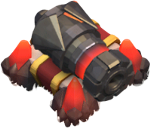
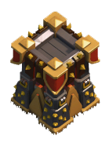

|
Trampa de Salto |
RESUMEN
- ¡Esta pequeñina saltarina mantendrá a las visitas no deseadas fuera de tu propiedad!
- Causa la muerte instantánea al primer grupo de enemigos que camina en él, lanza por los Aires hasta a 15 unidades de vivienda de las tropas. Por ejemplo, puede lanzar 15 arqueros o 3 Gigantes.
- No afecta a P.E.K.K.A por su pesada armadura. Del mismo modo es ineficaz contra Golems y Héroes.
- La trampa de Salto a menudo no afecta a los Duendes, esto se debe a que el Duende es demasiado rápido para que la Trampa de Salto lo haga volar por los aires (por lo general es capaz de moverse fuera del rango antes de que la trampa de Salto tenga oportunidad de influir en él). Sin embargo, si el Duende no continúa en movimiento una vez que la trampa de Salto se ha disparado (parando para atacar un edificio de los recursos, por ejemplo), lo lanza similar a un bárbaro o arquera.
- Una buena estrategia para Trampas de salto es colocarlos en un espacio de muro intencionalmente diseñado. Como las tropas por lo general tienden a pasar por la brecha en lugar de abrir su camino a través de los muros, así serán dirigidos a través de la trampa y ¡volaran!. Recuerda, sin embargo, que las trampas de salto son estructuras temporales y hasta su reparación serán inútiles después de un ataque enemigo.
- La trampa de Salto es la única trampa que no se puede mejorar.
|
 |
|
Bomba |
RESUMEN
- Las bombas son trampas baratas que permanecen ocultas para el enemigo hasta que la activa con una tropa que entra en su radio de activación..
- Si una bomba es activada, debe repararse, o no explotará en el siguiente ataque enemigo.
- Posee un breve retraso entre el tiempo en que se activa y cuando explota.
- En los niveles 1 y 2, es una bomba redonda normal con mecha.
- En los niveles 3 y 4, se cubre de cuatro pinchos.
- En los niveles 5 y 6, la bomba se recubre de metal.
|
ESTRATEGIA
Defensiva
- La estrategia más utilizada consiste en colocar las bombas alrededor de la parte externa de la zona en que se encuentran los edificios de la aldea, de preferencia en el sur y oeste, que es donde suelen desplegarse las tropas.
- Mientras esté en proceso de mejora, no explotará y su posición será visible para el atacante.
|
|
Bomba Gigante |
RESUMEN
- Cuándo estes buscando una gran explosión, necesitas el conjunto de explosivos.
- Explota cuando un enemigo se acerca. Es una versión mucho más poderosa de la Bomba. Crea daño de salpicadura a todos los enemigos con 3 - 4 casillas de radio.
- El conjunto de explosivos ocupa la misma cantidad de espacio (2x2) como Torre Tesla.
- Si tiene varios lugares donde sus Teslas ocultos podrían aparecer, la colocación de bombas gigantes en los demás puede ser eficaz, ya que el enemigo puede decidir que la zona es segura una vez que aparecen los Torre Tesla y soltar allí tropas adicionales.
- Una vez activados el conjunto de explosivos deben ser re-armados con el fin de ser parte de la próxima Disposición defensiva.
- El conjunto de explosivos no puede ser activado durante una mejora.
|
|
|
Bomba Aérea |
RESUMEN
- Última invención en el campo de control de plagas. Esta trampa puede causar un gran daño a varias unidades aéreas.
- Explota cuando una tropa de vuelo entra en la proximidad. Esencialmente es una versión aerea de la bomba normal, aunque el radio de activacion y la onda expansiva de la bomba de aire es mucho mayor.
- Extremadamente eficaz contra grandes grupos de esbirros, y hace una gran cantidad de daño a los globos (especialmente el nivel 3 y por debajo). Poco eficaz contra las tropas que cuentan con mucha salud, como los dragones.
- En el nivel 3 la bomba de aire tiene picos en su superficie y se puede ver con mayor facilidad dentro de su compartimento, y el compartimento se abre ligeramente.
|
|
 |
Mina de Rastreo Aérea |
RESUMEN
- ¿Es un pájaro? ¿Es un avión? bueno,da igual,va a volar por los aires la mina de rastreo aérea. Esta trampa causa un gran daño a una unidad aérea.
- Es mejor utilizarla contra dragones o cualquier otra poderosa unidad aérea.
- La mina de rastreo aérea es incapaz de rastrear a los esbirros,y no puede ser activada por ellos.
- Esta trampa puede atacar a Dragones,Sanadoras y Globos.
- Una vez activadas,las trampas deben ser rearmadas con el fin de ser parte de la próxima distribución defensiva.
- Esta trampa es considerada junto a la Bomba gigante la mas poderosa.
- La mina de rastreo aérea no puede rastrar a los Esbirros por su pequeño tamaño de dos espacios.
- En el nivel 3,la mina de rastreo aérea tiene picos en su superficie y se puede ver con mayor facilidad dentro de su compartimiento,y los compartimientos se abren ligeramente
|
|
|  |
Cañón |
RESUMEN
- Los cañones son edificios defensivos básicos y muy útiles contra tropas terrestres. Pueden eliminar con facilidad ejércitos de tropas como bárbaros, arqueras, duendes, etcétera.
- Su alcance puede destruir a los rompemuros, ya que estos cuentan con poca vida. Al no poder destruir los muros con rompemuros, se da más oportunidad a todas las defensas para destruir a las demás tropas antes de que accedan a la base.
|
ESTRATEGIA
Defensiva
- Los cañones abarcan una gran área de ataque y causan un buen daño, además que pueden proteger a otros edificios defensivos, o bien, pueden servir de distracción mientras otros atacan las tropas.
- Se recomienda ponerlo cerca del rango de alcance de la defensa aérea, pues los cañones no pueden atacar tropas aéreas.
Ofensiva
- Los cañones no pueden atacar a unidades aéreas, por lo que son un blanco fácil para globos y dragones si no se complementan de defensas aéreas, por ejemplo.
- Únicamente pueden atacar a una unidad a la vez, por lo que pueden verse amenazados cuando son atacados por un grupo de unidades.
|
|  |
Torre de Arqueras |
RESUMEN
- Las torres de arqueras son estructuras muy útiles por su capacidad de atacar a objetivos terrestres y aéreos, además que su alcance es considerablemente bueno.
|
ESTRATEGIA
Defensiva
- Al poder atacar tanto a unidades terrestres cómo aéreas desde una gran distancia, es buena idea ponerlas en el perímetro externo de la aldea, para permitir aprovechar su excelente alcance y dando una cobertura para las otras defensas.
Ofensiva
- Aunque pueden afectar a los dos tipos de tropas (terrestres y aéreas), únicamente pueden disparar a uno a la vez, lo que vuelve vulnerables a estas torres al estar siendo atacadas por numerosos grupos de tropas.
- Es recomendable no utilizar globos hasta que las torres sean destruídas, pues al ser unidades lentas, son un objetivo fácil. Si se utilizan globos, es más fácil usar un grupo de estos para que puedan destruir rápidamente las torres de arqueras con el menor número de pérdidas posible.
|